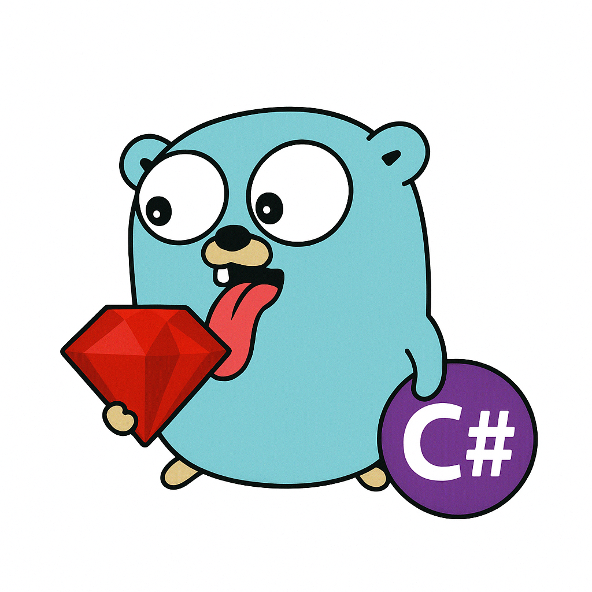
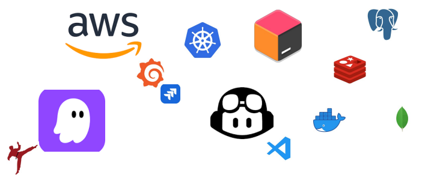

HOAN PHUNG
Ruby on Rails Lead / Software Architect
HCMC, Vietnam ·
phungthehoan98@gmail.com ·
+84 398 704 477

PROFESSIONAL SUMMARY
Senior Ruby on Rails Engineer with 5+ years of experience, transitioning into a Lead / Architect role. Strong background in system design, distributed systems, scalability, and production reliability. Proven ability to lead teams, design microservices, and optimize high-traffic platforms.
SYSTEM DESIGN & ARCHITECTURE
- Distributed systems & microservices architecture
- Scalability strategies (horizontal scaling, caching, async processing)
- High availability, fault tolerance, and resiliency patterns
- API design, versioning, and backward compatibility
- Observability: logging, metrics, tracing
TECHNICAL SKILLS
Backend: Ruby on Rails, Go (Golang)
Databases: PostgreSQL (indexing, query optimization), MongoDB, Elasticsearch, Redis
Frontend: HTML, CSS, JavaScript, React.js, ExtJS
Messaging: Kafka, Sidekiq, background jobs
Cloud & DevOps: AWS, Kubernetes, Jenkins, CI/CD
Monitoring: Grafana, Kibana, Graylog, Sentry
AI & Dev Tools: GitHub Copilot, Kiro, JetBrains IDEs, VS Code
PROFESSIONAL EXPERIENCE
DELIVEREE — Senior Software Engineer / Tech Lead
- Lead production systems, incident response, and hotfixes
- Design dashboards and high-level queries for system monitoring
- Optimize Go microservices for performance and stability
- Mentor engineers and collaborate with product and business teams
BESTARION JSC — Full-stack Developer
- Developed healthcare and fintech platforms using Ruby on Rails
- Built APIs, reporting systems, and mobile integrations
- Participated in system design and production deployments
EDUCATION
Bachelor of Information Technology
Ho Chi Minh City University of Food Industry (2016–2020)
GPA: 3.01 / 4.0
